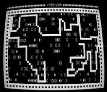
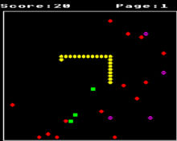
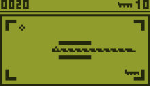

The Snake variety of games dates back to the arcade game Blockade, developed and published by Gremlin in 1976. In 1978, Atari, Inc. released, as an unofficial port, an early home console version of the Blockade concept, titled Surround. Surround was one of the nine Atari 2600 (VCS) launch titles, and was also sold by Sears under the name Chase. That same year, a similar game was launched for the Bally Astrocade as Checkmate. The first known personal computer version of Snake, titled Worm, was programmed in 1978 by Peter Trefonas of the US on the TRS-80 computer, and published by CLOAD magazine in the same year. This was followed shortly afterwards with versions from the same author for the Commodore PET and Apple II computers. A microcomputer port of Hustle was first written by Peter Trefonas in 1979 and published by CLOAD. This was later released by Milton Bradley for the TI-99/4A in 1980. There were several versions of Snake on the BBC Micro. 1982's Snake by Dave Bresnen was different in that the snake was controlled using the left and right arrow keys relative to the direction it was heading in. The snake increases in speed as it gets longer, and there are no "lives", making achieving a high score or reaching higher levels relatively difficult as one mistake means starting from the beginning.
An analog joystick-controlled variant of Snake, called Anaconda, was included as a hidden minigame in TimeSplitters 2, which featured free rotation instead of a fixed 4-direction system, and multiple types of food.More recent versions include a Neopets version known as Meerca Chase. Snake can be played on YouTube videos that use the 2010 version of the player. When a video is selected, the user can press the 'left' key, the 'right' key, the 'home' key, or the 'end' key for any period of time before immediately pressing the 'up' key. The game will appear and can be played in the videoscreen. Until 2012, a version called Old Snakey could be played inside Gmail.